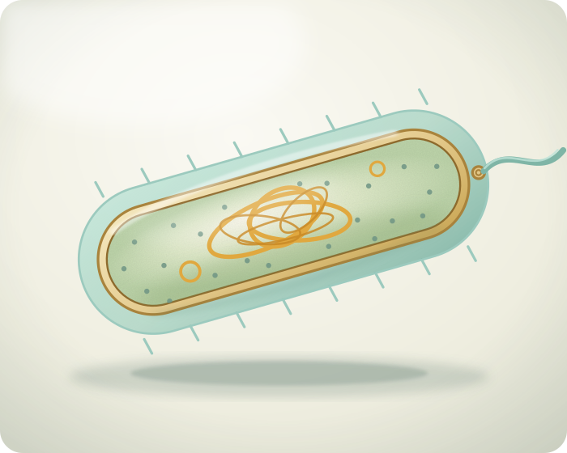

Modelo tridimensional
Una célula sin compartimentos internos
Su ADN se encuentra en el nucleoide, en contacto con el citoplasma. No posee organelas rodeadas por membrana.
Las bacterias y las arqueas son organismos procariotas. Aunque suelen medir pocos micrómetros, pueden obtener energía, responder a estímulos, desplazarse y reproducirse por fisión binaria.
La pared celular aporta protección y forma; la cápsula, cuando existe, ayuda a evitar la desecación o la acción de defensas. Los ribosomas fabrican proteínas y los flagelos permiten el movimiento.
ADNGeneralmente circular y ubicado en el nucleoide.
TamañoAproximadamente 1–10 μm, con excepciones.
ReproducciónFisión binaria, sin mitosis.
EjemplosBacterias y arqueas.

Arrastrá para explorar · rotación automática
Vista didáctica, no a escala

Para observar
¿Qué cambia si desaparece el núcleo?
En una procariota, la ausencia de núcleo no significa ausencia de control: el ADN contiene instrucciones y los ribosomas las convierten en proteínas. La diferencia está en cómo se organiza el interior celular.
ProcariotaNucleoide sin envoltura nuclear.
EucariotaNúcleo rodeado por una envoltura.
En comúnMembrana, citoplasma, ADN y ribosomas.